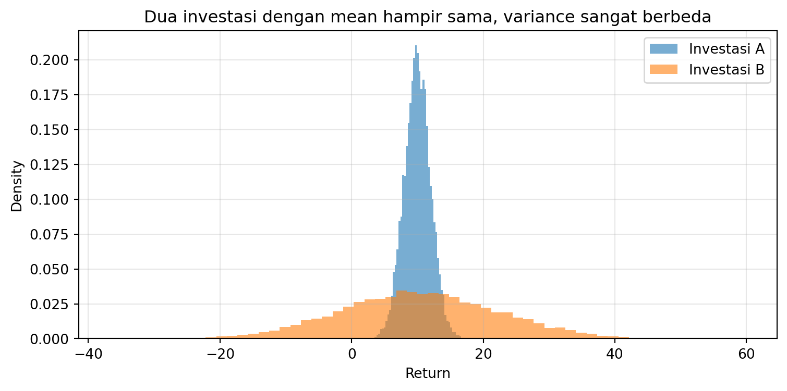
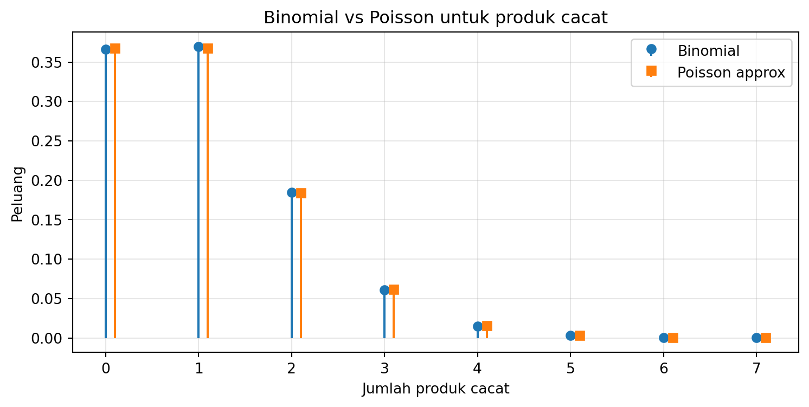
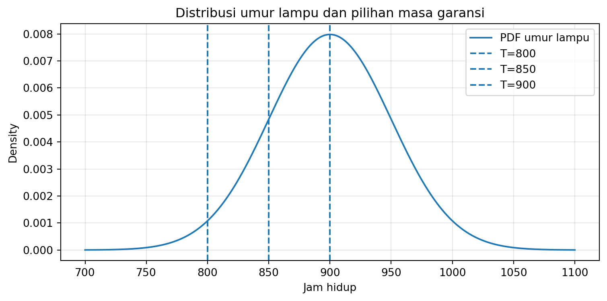
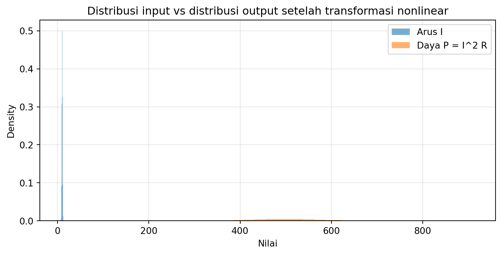
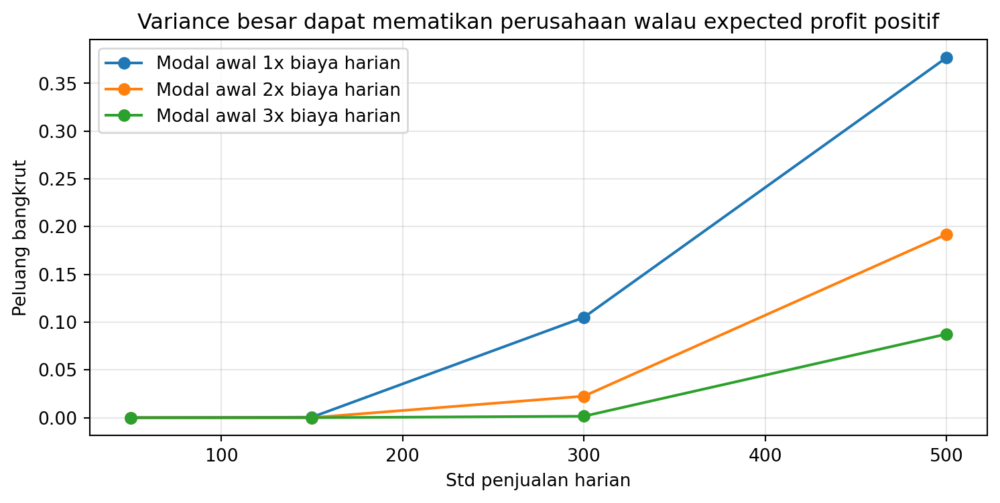
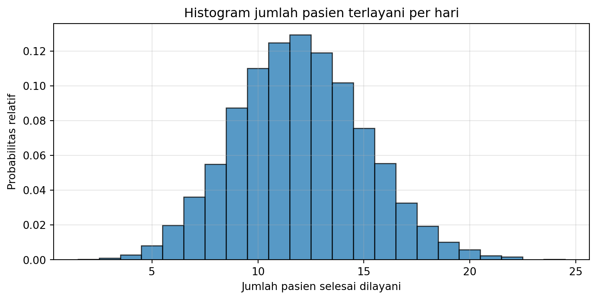
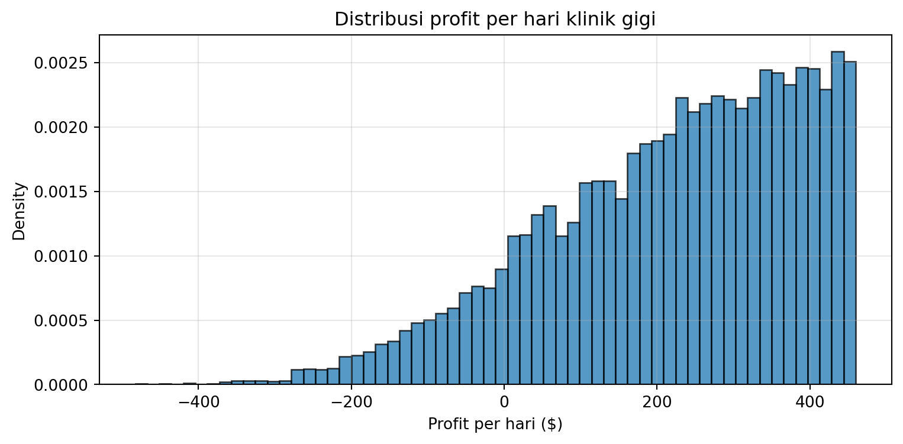

Setelah mempelajari bab ini, mahasiswa diharapkan mampu:
melihat probabilitas dan statistika sebagai alat pengambilan keputusan,
memahami mengapa random variable diperlukan untuk memodelkan dunia yang tidak pasti,
mengenali peran ekspektasi dan varians dalam membandingkan pilihan,
menggunakan Python untuk mendapatkan quick wins sebelum masuk ke logika formal,
menghubungkan konsep probabilitas dengan kasus nyata di bidang teknik, bisnis, dan layanan.
3.2 Pembuka
Banyak mahasiswa pertama kali bertemu probabilitas dan statistika sebagai kumpulan simbol, rumus, dan notasi yang terasa dingin. Padahal, di balik semua itu, probabilitas dan statistika sesungguhnya adalah bahasa untuk menjawab pertanyaan yang sangat manusiawi:
Apa keputusan yang paling masuk akal bila masa depan belum pasti?
Mana pilihan yang lebih aman?
Mana yang lebih menguntungkan?
Seberapa besar risiko yang harus kita tanggung?
Kapan kita harus berhenti mengandalkan intuisi dan mulai menghitung?
Bab ini mengajak Anda masuk ke probabilitas bukan dari pintu definisi formal terlebih dahulu, tetapi dari pintu yang lebih akrab: pengambilan keputusan.
3.3 1.1 Dari Pilihan ke Model
Setiap hari manusia membuat keputusan. Sebagian kecil: memilih rute ke kampus, memilih tempat makan siang, memilih waktu belajar. Sebagian lain lebih besar: memilih investasi, menentukan kebijakan produksi, menetapkan garansi, menambah jumlah dokter, atau menentukan batas aman komponen listrik.
Masalahnya, keputusan hampir selalu dibuat sebelum kita tahu apa yang akan terjadi. Masa depan belum datang, data belum lengkap, keadaan tidak sepenuhnya pasti. Karena itu, kita membutuhkan model.
Model membantu kita menyederhanakan kenyataan agar bisa dipikirkan, dihitung, dan diputuskan. Salah satu model paling penting dalam probabilitas adalah random variable. Dengan random variable, kejadian yang semula acak dipetakan menjadi angka. Begitu dunia acak berhasil dipetakan ke bilangan, kita bisa mulai menghitung: - peluang, - rata-rata jangka panjang, - seberapa liar penyimpangannya, - dan konsekuensi keputusan.
3.4 1.2 Quick Win: Melihat Mengapa Rata-Rata Saja Tidak Cukup
Mari mulai dari contoh yang sangat sederhana. Misalkan Anda harus memilih satu dari dua opsi investasi:
A: stabil, keuntungan kecil tetapi konsisten
B: bisa sangat menguntungkan, tetapi bisa juga sangat buruk
Secara kasatmata, dua opsi bisa saja memiliki rata-rata hasil yang sama. Tetapi apakah itu berarti keduanya sama baik?
import numpy as npimport matplotlib.pyplot as pltrng = np.random.default_rng(42)## Dua investasi dengan mean hampir sama, tetapi variasi berbedaA = rng.normal(loc=10, scale=2, size=10000)B = rng.normal(loc=10, scale=12, size=10000)print("Mean A =", A.mean())print("Var A =", A.var())print("Mean B =", B.mean())print("Var B =", B.var())
Mean A = 9.979500249171975
Var A = 4.050444191840732
Mean B = 10.24422094568761
Var B = 144.83317214885628
plt.figure(figsize=(9, 4))plt.hist(A, bins=60, alpha=0.6, density=True, label="Investasi A")plt.hist(B, bins=60, alpha=0.6, density=True, label="Investasi B")plt.xlabel("Return")plt.ylabel("Density")plt.title("Dua investasi dengan mean hampir sama, variance sangat berbeda")plt.legend()plt.grid(alpha=0.3)plt.show()

Dari hasil ini, kita segera mendapat quick win:
mean memberi gambaran hasil rata-rata,
variance memberi gambaran seberapa liar hasil itu,
keputusan yang matang tidak cukup melihat rata-rata, tetapi juga perlu melihat risiko.
Di sinilah probabilitas dan random variable mulai terasa hidup. Kita tidak sedang belajar rumus demi rumus. Kita sedang belajar cara membandingkan pilihan secara bertanggung jawab.
3.5 1.3 Pola Umum Pengambilan Keputusan
Dalam buku ini, kita akan sering memakai pola berikut:
3.5.1 K — Konteks
Apa situasi nyatanya? Siapa pengambil keputusan? Apa kebutuhan dan risikonya?
3.5.2 M — Model
Apa random variable yang relevan? Apa asumsi masuk akalnya? Apa parameter pentingnya?
3.5.3 Q — Questions
Apa pertanyaan yang benar-benar ingin dijawab? Peluang? Rata-rata? Risiko bangkrut? Peluang cacat? Jumlah pelanggan? Waktu tunggu?
3.5.4 A — Apply
Gunakan Python, simulasi, visualisasi, dan teori probabilitas untuk menjawab pertanyaan dan menarik implikasi keputusan.
Pola ini akan kita sebut sebagai pendekatan KMQA: Konteks → Model → Questions → Apply.
3.6 1.4 Random Variable sebagai Bahasa Angka untuk Dunia Acak
Misalkan sebuah gerbang tol mencatat jumlah kendaraan yang lewat antara pukul 09.00–10.00. Besaran itu tidak pasti. Setiap hari nilainya bisa berbeda. Kita dapat menyatakan besaran ini sebagai sebuah random variable:
\[
X = \text{jumlah kendaraan yang melewati gerbang tol antara pukul 09.00–10.00}
\]
Dengan begitu, kejadian nyata yang berubah-ubah kita petakan menjadi bilangan. Begitu sudah menjadi bilangan, kita bisa bertanya: - berapa nilai yang mungkin? - berapa peluang setiap nilai? - berapa rata-ratanya? - seberapa besar variasinya?
Itulah inti random variable.
3.7 1.5 Kasus 1 — Ekspektasi dan Varians dalam Pilihan Investasi
3.7.1 K — Konteks
Seorang mahasiswa mendapat dua opsi investasi kecil untuk dana tabungannya:
Investasi A: hasil tidak terlalu tinggi, tetapi relatif stabil.
Investasi B: kadang sangat tinggi, kadang turun tajam.
Ia bertanya: kalau saya ingin mengambil keputusan yang lebih dewasa, ukuran apa yang harus saya lihat?
3.7.2 M — Model
Misalkan: - \(X_A\) = return investasi A - \(X_B\) = return investasi B
Masing-masing adalah random variable. Dua ukuran dasar yang penting adalah:
\[
E[X] = \text{ekspektasi}
\]
dan
\[
\mathrm{Var}(X) = E[(X - E[X])^2]
\]
Ekspektasi memberi gambaran hasil rata-rata jangka panjang. Varians memberi ukuran seberapa jauh hasil itu bisa menyimpang.
3.7.3 Q — Questions
Mana investasi dengan rata-rata hasil lebih baik?
Mana investasi dengan risiko lebih besar?
Bila dua investasi punya rata-rata hampir sama, apakah variance dapat mengubah keputusan?
Investasi dengan ekspektasi lebih tinggi memang tampak menarik. Tetapi bila variance-nya juga jauh lebih besar, maka keputusan tidak sesederhana “pilih yang rata-ratanya terbesar”. Dalam dunia teknik, sains data, dan bisnis, keputusan hampir selalu menimbang nilai harapan dan ketidakpastian sekaligus.
3.7.4.2 Poin inti
Ekspektasi = pusat distribusi
Varians = ukuran penyebaran
Dua pilihan dengan mean sama belum tentu sama baik
Probabilitas membantu kita memilih secara lebih sadar, bukan sekadar “feeling”
3.7.5 Latihan singkat
Buat dua investasi lain yang punya mean hampir sama tetapi variance berbeda.
Simulasikan 10.000 kali dan bandingkan histogramnya.
Investasi mana yang akan Anda pilih jika Anda tidak tahan melihat hasil negatif besar?
3.8 1.6 Kasus 2 — Produk Cacat dan Quality Control
3.8.1 K — Konteks
Sebuah pabrik mengklaim bahwa peluang sebuah produk cacat hanya 1%. Tim quality control mengambil sampel 100 unit. Mereka ingin tahu peluang menemukan tepat 2 produk cacat. Keputusan yang akan diambil: apakah produksi lanjut seperti biasa, perlu inspeksi tambahan, atau bahkan perlu dihentikan sementara?
3.8.2 M — Model
Jika: - setiap unit independen, - tiap unit punya peluang cacat \(p = 0.01\), - jumlah sampel \(n = 100\),
maka banyaknya produk cacat \(X\) dapat dimodelkan sebagai:
\[
X \sim \mathrm{Binomial}(n=100, p=0.01)
\]
Untuk kejadian langka, distribusi Poisson juga sering menjadi pendekatan:
\[
X \approx \mathrm{Poisson}(\lambda = np = 1)
\]
3.8.3 Q — Questions
Berapa peluang tepat 2 cacat?
Seberapa baik Poisson mendekati Binomial pada kasus ini?
Jika ditemukan terlalu banyak cacat, kapan QC harus curiga?
from scipy.stats import binom, poissonx = np.arange(0, 8)plt.figure(figsize=(9,4))plt.stem(x, binom.pmf(x, n, p), linefmt='C0-', markerfmt='C0o', basefmt=" ", label="Binomial")plt.stem(x+0.1, poisson.pmf(x, lam), linefmt='C1-', markerfmt='C1s', basefmt=" ", label="Poisson approx")plt.xlabel("Jumlah produk cacat")plt.ylabel("Peluang")plt.title("Binomial vs Poisson untuk produk cacat")plt.legend()plt.grid(alpha=0.3)plt.show()

3.8.4.1 Interpretasi
Kasus ini penting karena memperkenalkan dua hal sekaligus: 1. random variable diskrit untuk menghitung banyak kejadian, 2. pentingnya memilih model yang tepat.
Engineer yang baik bukan yang hafal rumus paling banyak, tetapi yang tahu model mana yang masuk akal untuk suatu konteks.
3.8.5 Latihan singkat
Hitung peluang tepat 0, 1, 2, dan 3 cacat.
Bandingkan hasil Binomial dan Poisson.
Jika pabrik menemukan 6 produk cacat dari 100, apakah itu masih terasa wajar?
3.9 1.7 Kasus 3 — Garansi Produk dan Risiko Klaim
3.9.1 K — Konteks
Sebuah perusahaan lampu ingin menetapkan masa garansi. Umur lampu bersifat acak. Jika masa garansi terlalu pendek, pelanggan kecewa. Jika terlalu panjang, biaya klaim bisa membengkak. Keputusan harus menyeimbangkan daya saing produk dan risiko kerugian.
3.9.2 M — Model
Misalkan umur lampu \(X\) dinyatakan dalam jam. Untuk contoh awal, anggap:
\[
X \sim \mathcal{N}(900, 50^2)
\]
Artinya: - rata-rata umur = 900 jam - simpangan baku = 50 jam
Yang ingin dihitung misalnya: \[
P(X < T)
\] yaitu peluang lampu rusak sebelum waktu garansi \(T\).
3.9.3 Q — Questions
Berapa peluang rusak sebelum 800 jam?
Bagaimana jika garansi 850 jam? 900 jam?
Mana kebijakan yang lebih aman bagi perusahaan?
3.9.4 A — Apply
from scipy.stats import normmu =900sigma =50for T in [800, 850, 900]:print(f"P(X < {T}) =", norm.cdf(T, loc=mu, scale=sigma))
x = np.linspace(700, 1100, 400)pdf = norm.pdf(x, loc=mu, scale=sigma)plt.figure(figsize=(9,4))plt.plot(x, pdf, label="PDF umur lampu")for T in [800, 850, 900]: plt.axvline(T, linestyle="--", label=f"T={T}")plt.xlabel("Jam hidup")plt.ylabel("Density")plt.title("Distribusi umur lampu dan pilihan masa garansi")plt.legend()plt.grid(alpha=0.3)plt.show()

3.9.4.1 Interpretasi
Statistika di sini bukan sekadar menjelaskan data. Ia menjadi alat desain keputusan. Dengan probabilitas, perusahaan dapat memperkirakan biaya klaim sebelum kebijakan garansi benar-benar diterapkan.
3.9.5 Latihan singkat
Hitung peluang rusak sebelum 875 jam.
Jika target klaim maksimum 10%, berapa garansi maksimum yang bisa diberikan?
Bagaimana jika simpangan baku membesar menjadi 80 jam?
3.10 1.8 Kasus 4 — Fungsi Random Variable dan Keamanan Sistem
3.10.1 K — Konteks
Dalam sistem kelistrikan sederhana, daya dapat dinyatakan sebagai:
\[
P = I^2 R
\]
Jika arus \(I\) memiliki variasi kecil, daya \(P\) juga akan ikut acak. Tetapi karena hubungan ini kuadratik, perubahan kecil pada arus bisa membesar pada daya. Untuk sistem teknik, pertanyaan pentingnya adalah: seberapa sering daya melewati ambang aman?
plt.figure(figsize=(9,4))plt.hist(I, bins=60, alpha=0.6, density=True, label="Arus I")plt.hist(P, bins=60, alpha=0.6, density=True, label="Daya P = I^2 R")plt.xlabel("Nilai")plt.ylabel("Density")plt.title("Distribusi input vs distribusi output setelah transformasi nonlinear")plt.legend()plt.grid(alpha=0.3)plt.show()

3.10.4.1 Interpretasi
Kasus ini menunjukkan gagasan penting: - random variable tidak selalu berdiri sendiri, - fungsi dari random variable dapat mengubah bentuk distribusi, - keputusan teknik sering bergantung pada distribusi output, bukan sekadar distribusi input.
3.10.5 Latihan singkat
Hitung peluang \(P > 600\).
Ubah simpangan baku arus menjadi 1.5 dan lihat perubahan distribusi daya.
Mengapa fungsi kuadrat lebih “berbahaya” daripada fungsi linear dalam konteks batas aman?
3.11 1.9 Kasus 5 — Varians, Profit, dan Risiko Bangkrut
3.11.1 K — Konteks
Sebuah perusahaan memproduksi 1000 unit per hari. Biaya produksi tiap produk adalah $100. Produk dijual dengan margin 10% per unit yang laku. Penjualan per hari bersifat acak dengan rata-rata 1000 unit. Profit harian ditambahkan ke saldo modal. Bila saldo modal negatif, perusahaan bangkrut.
Pertanyaannya: - kalau rata-rata profit positif, apakah perusahaan pasti aman? - apakah variance besar pada penjualan bisa tetap membunuh perusahaan?
3.11.2 M — Model
biaya per produk = $100
produksi per hari = 1000
harga jual per produk = $110
biaya produksi harian = $100,000
Jika penjualan harian \(X_t\), maka profit harian:
\[
\Pi_t = 110X_t - 100000
\]
Saldo modal diperbarui setiap hari:
\[
M_t = M_{t-1} + \Pi_t
\]
Jika \(M_t < 0\), perusahaan bangkrut.
3.11.3 Q — Questions
Jika rata-rata penjualan 1000, apakah expected profit harian positif?
Bagaimana pengaruh variance penjualan terhadap risiko bangkrut?
Bagaimana peran modal awal 1x, 2x, 3x biaya produksi harian?
capital_levels = [1, 2, 3]sales_stds = [50, 150, 300, 500]results = {}for c in capital_levels: init_cap = c * daily_cost results[c] = []for s in sales_stds: finals, p_bankrupt = simulate_company(initial_capital=init_cap, sales_std=s) results[c].append((s, finals.mean(), p_bankrupt))for c in capital_levels:print(f"\nModal awal = {c} x biaya harian")for s, mean_final, p_bankrupt in results[c]:print(f"std sales={s:>3} | mean final capital={mean_final:,.0f} | P(bankrupt)={p_bankrupt:.3f}")
Modal awal = 1 x biaya harian
std sales= 50 | mean final capital=3,751,041 | P(bankrupt)=0.000
std sales=150 | mean final capital=3,755,095 | P(bankrupt)=0.001
std sales=300 | mean final capital=3,780,991 | P(bankrupt)=0.105
std sales=500 | mean final capital=3,903,849 | P(bankrupt)=0.377
Modal awal = 2 x biaya harian
std sales= 50 | mean final capital=3,847,908 | P(bankrupt)=0.000
std sales=150 | mean final capital=3,857,446 | P(bankrupt)=0.000
std sales=300 | mean final capital=3,849,650 | P(bankrupt)=0.022
std sales=500 | mean final capital=4,004,548 | P(bankrupt)=0.192
Modal awal = 3 x biaya harian
std sales= 50 | mean final capital=3,950,421 | P(bankrupt)=0.000
std sales=150 | mean final capital=3,955,070 | P(bankrupt)=0.000
std sales=300 | mean final capital=3,950,022 | P(bankrupt)=0.002
std sales=500 | mean final capital=4,118,620 | P(bankrupt)=0.087
plt.figure(figsize=(9,4))for c in capital_levels: xs = [r[0] for r in results[c]] ys = [r[2] for r in results[c]] plt.plot(xs, ys, marker='o', label=f"Modal awal {c}x biaya harian")plt.xlabel("Std penjualan harian")plt.ylabel("Peluang bangkrut")plt.title("Variance besar dapat mematikan perusahaan walau expected profit positif")plt.legend()plt.grid(alpha=0.3)plt.show()

3.11.4.1 Interpretasi
Ini adalah salah satu pelajaran paling penting dalam probabilitas untuk keputusan nyata:
Kalau variance terlalu besar, perusahaan bisa kehabisan napas sebelum sempat menikmati rata-rata jangka panjangnya.
3.11.4.2 Poin inti
Mean mengukur “arah”
Variance mengukur “ombak”
Modal awal adalah “bantalan”
Survival bergantung pada kombinasi mean, variance, dan cadangan modal
3.11.5 Latihan singkat
Ubah penjualan harian dari Normal menjadi Poisson atau Negative Binomial.
Bandingkan peluang bangkrutnya.
Mana yang lebih penting ditambah: margin, modal awal, atau pengurangan variance?
3.12 1.10 Kasus 6 — Klinik Gigi: Layanan, Throughput, dan Profit
3.12.1 K — Konteks
Sebuah klinik gigi buka 8 jam per hari. Satu dokter rata-rata memerlukan 30 menit untuk melayani seorang pasien. Karena jenis keluhan pasien berbeda-beda, waktu layanan bersifat acak dan dianggap memoryless. Rata-rata pasien datang 16 orang per hari.
Pertanyaan awal: - berapa rata-rata pasien yang dapat dilayani satu dokter per hari? - berapa distribusi profit harian jika dokter dibayar tetap dan pasien membayar proporsional dengan durasi layanan?
3.12.2 M — Model
Klinik buka 8 jam = 480 menit per hari.
Jika satu layanan rata-rata 30 menit, maka laju layanan dokter:
\[
\mu = 2 \text{ pasien/jam}
\]
Jika rata-rata pasien datang 16 per hari dalam 8 jam, maka laju kedatangan:
\[
\lambda = 2 \text{ pasien/jam}
\]
Ini adalah model M/M/1: - kedatangan Poisson, - layanan Eksponensial, - satu pelayan.
Untuk profit: - gaji dokter = $350/hari - biaya operasional = $200/hari - pasien membayar $1/menit layanan
Jika total waktu layanan aktual dalam sehari adalah \(B\) menit, maka:
\[
\text{Revenue} = B
\]\[
\text{Profit} = B - 350 - 200 = B - 550
\]
Karena \(B \le 480\), maka profit maksimum:
\[
480 - 550 = -70
\]
Artinya klinik pasti rugi pada tarif $1/menit.
3.12.3 Q — Questions
Berapa rata-rata pasien yang selesai dilayani per hari?
Bagaimana histogram pasien terlayani per hari?
Bagaimana distribusi profit per hari?
Jika ada dua dokter, apa yang berubah pada throughput dan profit?
3.12.4 A — Apply
import numpy as npimport matplotlib.pyplot as pltrng = np.random.default_rng(42)def simulate_mm1_day(arrival_rate_per_hour=2.0, service_rate_per_hour=2.0, hours=8.0):## Generate arrivals arrivals = [] t =0.0whileTrue: t += rng.exponential(scale=1/arrival_rate_per_hour)if t > hours:break arrivals.append(t) service_end_prev =0.0 served_count =0 busy_hours =0.0for a in arrivals: service_time = rng.exponential(scale=1/service_rate_per_hour) start =max(a, service_end_prev) end = start + service_time overlap_start =max(start, 0.0) overlap_end =min(end, hours)if overlap_end > overlap_start: busy_hours += overlap_end - overlap_startif end <= hours: served_count +=1 service_end_prev = endelse:break busy_minutes =60* busy_hoursreturn served_count, busy_minutes
served = []profits = []salary_per_doctor =300no_of_doctor =1service_rate_per_doctor_per_hour =2.0operational_cost_per_day=200revenue_per_minute=2for _ inrange(10000): s, b = simulate_mm1_day(arrival_rate_per_hour=2.0, service_rate_per_hour=no_of_doctor*service_rate_per_doctor_per_hour, hours=8.0) served.append(s) profits.append(revenue_per_minute * b - no_of_doctor * salary_per_doctor - operational_cost_per_day)served = np.array(served)profits = np.array(profits)print("Rata-rata pasien terlayani per hari =", served.mean())print("Rata-rata profit per hari =", profits.mean())print("Profit maksimum simulasi =", profits.max())
Rata-rata pasien terlayani per hari = 11.995
Rata-rata profit per hari = 218.96898501959993
Profit maksimum simulasi = 459.8579788323201
plt.figure(figsize=(9,4))bins = np.arange(served.min()-0.5, served.max()+1.5, 1)plt.hist(served, bins=bins, density=True, alpha=0.75, edgecolor='black')plt.xlabel("Jumlah pasien selesai dilayani")plt.ylabel("Probabilitas relatif")plt.title("Histogram jumlah pasien terlayani per hari")plt.grid(alpha=0.3)plt.show()

plt.figure(figsize=(9,4))plt.hist(profits, bins=60, density=True, alpha=0.75, edgecolor='black')plt.xlabel("Profit per hari ($)")plt.ylabel("Density")plt.title("Distribusi profit per hari klinik gigi")plt.grid(alpha=0.3)plt.show()

3.12.4.1 Interpretasi
Kasus ini mengajarkan beberapa hal sekaligus: - kapasitas rata-rata dokter, - pengaruh ketidakpastian layanan dan kedatangan, - perbedaan antara “rata-rata teoretis” dan “jumlah selesai terlayani sebelum tutup”, - kaitan antara model antrian dan model profit.
Untuk dua dokter, throughput meningkat, tetapi biaya tetap juga naik. Keputusan menambah dokter harus menimbang: - peningkatan kapasitas, - perubahan waiting time, - perubahan busy time, - dan perubahan profit.
3.12.5 Latihan singkat
Simulasikan versi dua dokter.
Bandingkan histogram pasien terlayani.
Cari tarif minimum per menit agar secara teori klinik bisa impas.
3.13 1.11 Menyimpulkan Bab Ini
Bab ini memperkenalkan satu ide besar: probabilitas dan statistika adalah alat untuk membuat keputusan ketika masa depan belum pasti.
Kita telah melihat bahwa: - investasi menuntut kita membandingkan ekspektasi dan risiko, - quality control membutuhkan model jumlah cacat, - garansi produk membutuhkan peluang kegagalan sebelum waktu tertentu, - fungsi random variable penting untuk keselamatan sistem, - variance dapat membuat perusahaan bangkrut walaupun mean profit positif, - model antrian dapat menjelaskan throughput dan profit layanan.
Di balik semua contoh itu, ada benang merah yang sama: kita memerlukan cara untuk memetakan ketidakpastian menjadi objek yang bisa dihitung. Itulah peran random variable.
3.14 1.12 Ringkasan Poin Inti
Pengambilan keputusan adalah konteks alami bagi probabilitas dan statistika.
Random variable memetakan dunia acak ke bilangan.
Ekspektasi membantu kita melihat kecenderungan rata-rata.
Varians membantu kita mengukur seberapa liar hasil yang mungkin terjadi.
Python memberi quick wins: melihat, mensimulasikan, dan memahami sebelum formalisasi penuh.
Model yang tepat penting: Binomial, Poisson, Normal, Exponential, dan lainnya tidak dapat dipertukarkan sembarangan.
Dalam banyak masalah nyata, keputusan yang baik tidak cukup melihat mean; ia juga harus melihat risiko, bentuk distribusi, dan konsekuensi.
3.15 1.13 Latihan Bab 1
3.15.1 A. Konseptual
Mengapa mean saja tidak cukup untuk membandingkan dua pilihan?
Apa perbedaan antara hasil acak dan random variable?
Mengapa keputusan garansi produk adalah masalah probabilistik?
3.15.2 B. Komputasional
Simulasikan dua investasi dengan mean sama tetapi variance berbeda.
Hitung peluang tepat 3 produk cacat dari 100 jika \(p=0.02\).
Hitung peluang sebuah lampu rusak sebelum 850 jam jika umur lampu normal dengan mean 900 dan simpangan baku 60.
3.15.3 C. Aplikatif
Dalam kasus perusahaan, apakah Anda lebih memilih menaikkan margin, menambah modal awal, atau menurunkan variance penjualan? Jelaskan.
Dalam kasus klinik gigi, apakah Anda akan menambah dokter kedua jika tarif masih $1/menit? Mengapa?
Berikan satu contoh lain dari kehidupan sehari-hari yang menurut Anda cocok dimodelkan dengan random variable.
3.16 1.14 Penutup Kecil
Kalau setelah membaca bab ini Anda merasa, “Ternyata probabilitas bukan sekadar rumus, tetapi cara berpikir,” maka bab ini sudah mencapai tujuannya.
Di bab berikutnya, kita akan memperdalam apa sebenarnya random variable itu, bagaimana range-nya didefinisikan, dan bagaimana PMF, CDF, PDF, ekspektasi, serta varians menjadi fondasi seluruh analisis berikutnya.